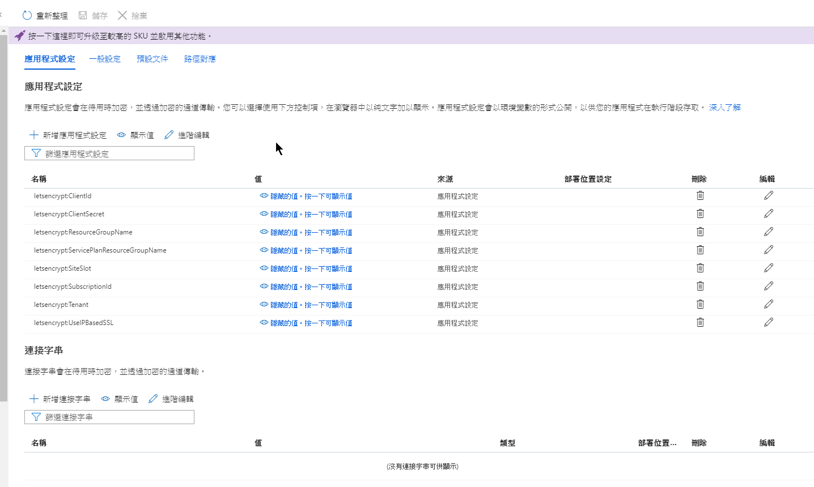
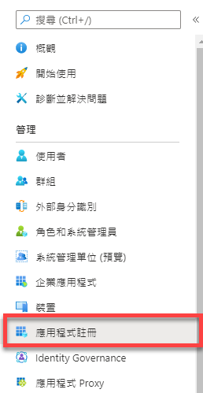
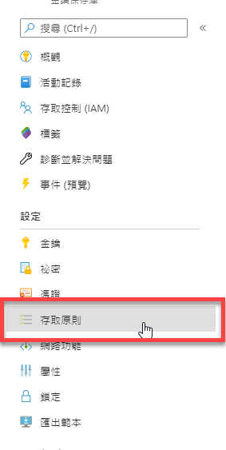
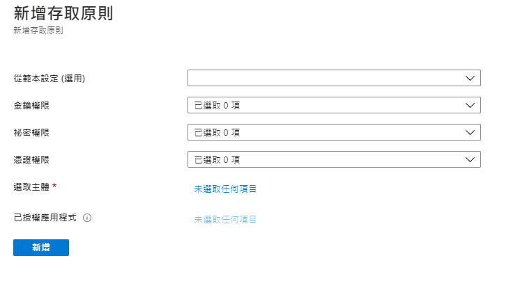
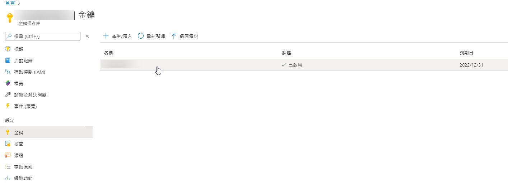
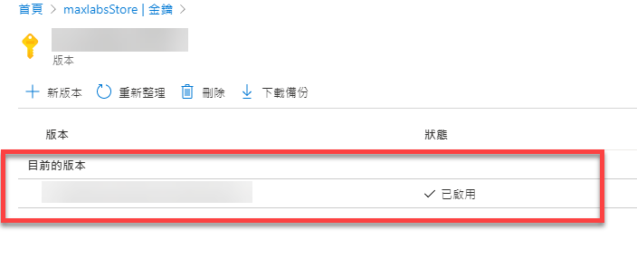
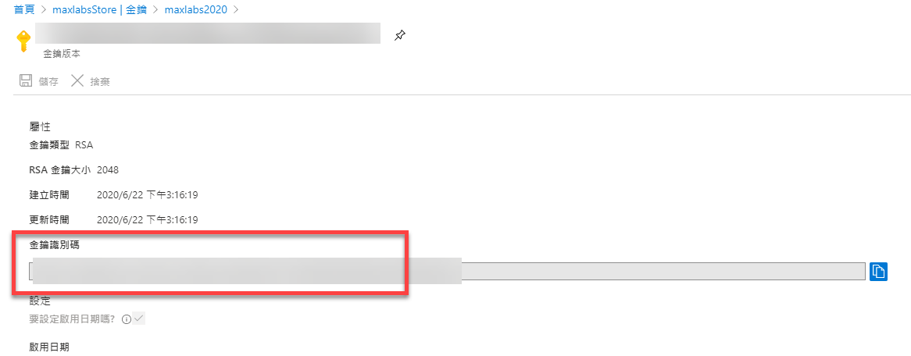

要使用 RSA Private Key 來做資料簽章表示我們需要將 Private Key 存放在某一個地方，但絕對不會在程式的參數設定檔內，其實在 ASP.NET Core 內提供很多方法可以存放設定檔，例如使用 user secret，更多資訊可以參閱此文件。
Azure 上面也有一個 Azure Key Vault 的服務，可以集中管理相關的金鑰 (Keys)、秘密 (Secret)、憑證 (Certificate) 等資訊，而相關的服務就可以連線到這一個 Key Vault 服務取得相關的資訊做進一步的使用，例如加解密等作業
秘密 (Secret)
在一個網站會有一些設定檔會因為部屬環境而所異動，這一類的設定當然不可能寫死在程式裡，所以會將這一類的設定檔放在某一個設定檔類，例如 appsettings.json 或是 user secret 等地方，而像資料庫連線這種資料敏感的資料，存放在 appsettings.json 內就十分危險，會建議放在版控以外的地方或是 Hosting 的主機上，例如 Azure App Service 就有提供設定環境參數的地方。

但如果同樣的資訊出現在不同的程式裡，分別設定就變得十分不合適了，這時候使用 Azure Key Vault 服務就會是個不錯的選擇，但這邊就不多說明如何建立 Azure Key Vault 的步驟了，相關資訊可以上網找一下，應該蠻多的
當 Azure Key Vault 設定好時，為了要讓網站 (ASP.NET Core MVC) 可以將 Key Vault 上所設定的 Secret 資訊讀近來，還需要以下有幾個步驟
-
在 Azure Active Directory 下註冊應用程式

-
註冊完成後，到該應用程式下的【憑證與秘密】，新增 【用戶端密碼】
- 這邊需要記下兩個資訊，分別是 【應用程式 (用戶端) 識別碼】與 【用戶端密碼的值】
- 這邊如果不想要使用用戶端密碼的，可以使用憑證的方式
-
回到 Azure Key Vault 的服務內，授權應用程式可以存取 Key Vault

-
新增存取原則

- 設定相關的權限
- 選擇套用的主體，這邊是指剛剛所註冊的應用程式
-
完成新增動作
到這邊，就已經完成相關權限設定的部分，接下來就是程式端的設定
程式
-
需要安裝以下套件
-
在 appsettings.json 的地方新增此資訊
1
2
3
4
5"KeyVault": {
"Vault": "xxx",
"ClientId": "xxx",
"ClientSecret": "xxx"
},當然這邊的
ClientId和ClientSecret會放在User secret下，而不會是appsettings.json內 -
在
Program.cs的地方做出以下調整1
2
3
4
5
6
7
8
9
10
11
12
13
14
15
16
17
18
19
20
21
22
23public static IHostBuilder CreateHostBuilder(string[] args) =>
Host.CreateDefaultBuilder(args)
.ConfigureAppConfiguration((ctx, builder) =>
{
// 新增部分
var builtConfig = builder.Build();
var keyVaultEndpoint = GetKeyVaultEndpoint(builtConfig["KeyVault:Vault"]);
if (!string.IsNullOrEmpty(keyVaultEndpoint))
{
var azureServiceTokenProvider = new AzureServiceTokenProvider();
var keyVaultClient = new KeyVaultClient(
new KeyVaultClient.AuthenticationCallback(
azureServiceTokenProvider.KeyVaultTokenCallback));
builder.AddAzureKeyVault(
keyVaultEndpoint, keyVaultClient, new DefaultKeyVaultSecretManager());
}
})
.ConfigureWebHostDefaults(webBuilder =>
{
webBuilder.UseStartup<Startup>();
});
// 新增部分
private static string GetKeyVaultEndpoint(string VAULT_NAME) => $"https://{VAULT_NAME}.vault.azure.net/"; -
當完成這修改後，.NET Core MVC 就會優先從 Azure Key Vault 裡取得 secret 資料，讀取的方式與其他參數設定取法是一樣的
-
金鑰 (Keys)
至於金鑰的取法就比較特殊點，需要透過 KeyVaultClient 的方式來取得，而且也只能取得公開金鑰的部分，私有金鑰要做的事情，則會透過 KeyVaultClient 來完成。
要建立 KeyVaultClient 的方法如下
1 | private KeyVaultClient GetClient() => new KeyVaultClient(new KeyVaultClient.AuthenticationCallback(async (string authority, string resource, string scope) => |
執行 GetClient() 就可以取得 KeyVaultClient，當取得 client 後，就可以取得我們想要的金鑰，但這邊最簡單的方式是透過金鑰的識別碼



這邊的【金鑰識別碼】就是我們等等要用的資訊，先記起來，相關的程式碼會這樣子寫。
1 | var KeyId = "xxx"; // 金鑰識別碼 |
到這裡基本上就是一些 KeyVaultClient 的操作，當然還有其他更細節的東西，可能就要等我之後有玩更深入時，才能分享了